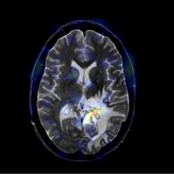

image fusion
how to find a good mix for e.g. PET and MRI images ?
there are a ton of existing ideas already, the most obvious is averaging :
Mat fuse_avg(const Mat &im1, const Mat &im2)
{
Mat fusion;
addWeighted(im1, 0.5, im2, 0.5, 0, fusion);
return fusion;
}
PCA fusing also looks good :
Mat fuse_pca(const Mat &im1, const Mat &im2)
{
Mat c1 = im1.reshape(1, im1.total() * im1.channels());
Mat c2 = im2.reshape(1, im2.total() * im1.channels());
Mat dat;
hconcat(c1,c2,dat);
dat.convertTo(dat,CV_32F);
PCA pca(dat, noArray(), 0, 1);
Mat_ ev = pca.eigenvectors;
Mat_ mu = pca.mean;
Mat fusion;
addWeighted(c1-mu(0,0), ev(0,0), c2-mu(0,1), ev(0,1), 0, fusion);
return fusion.reshape(im1.channels(), im1.rows);
}
